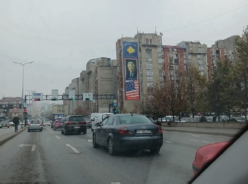
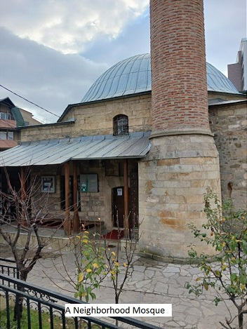
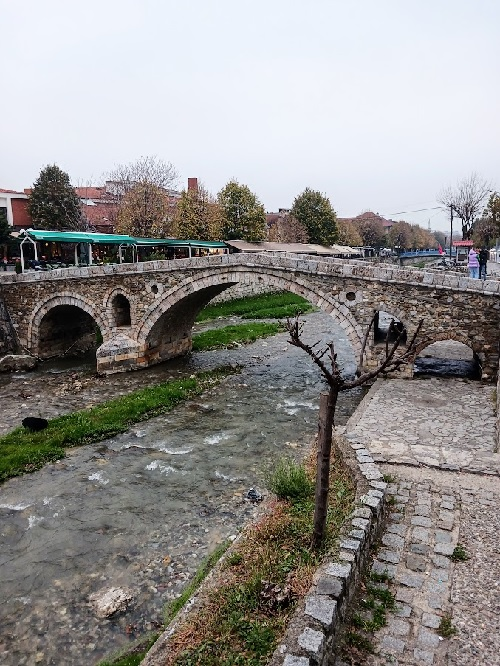
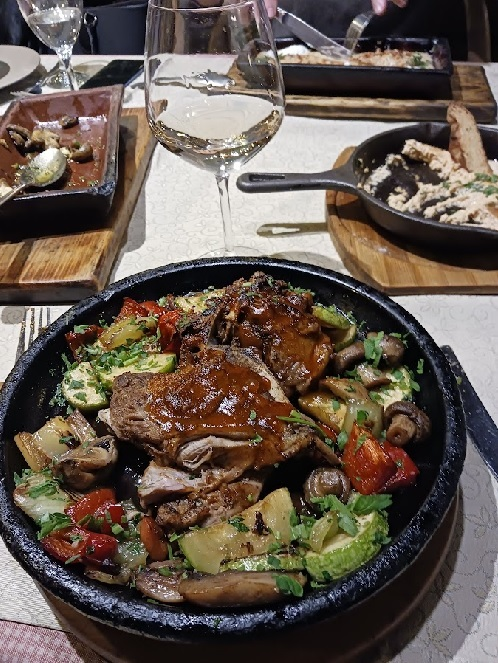
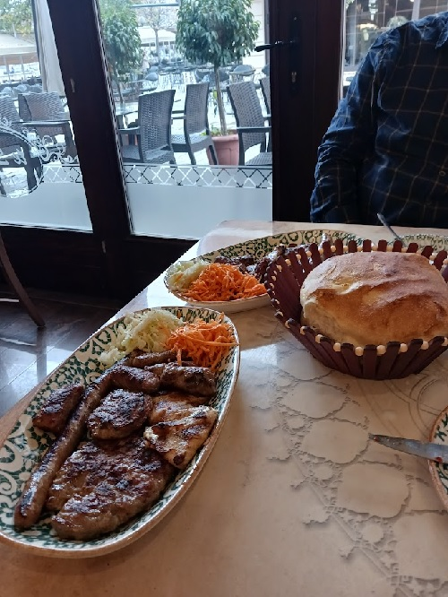
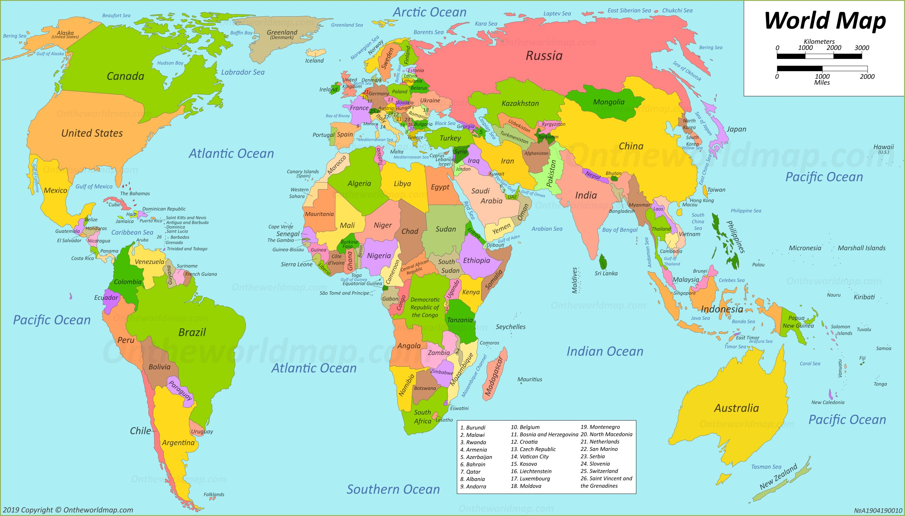

FUN FACTS ABOUT PRISTINA
Pristina is the capital and largest city of Kosovo. The city's municipal boundaries in Pristina District form the largest urban center in Kosovo. After Tirana, Pristina has the second largest population of ethnic Albanians and speakers of the Albanian language.
Pristina is the capital and the economic, financial, political and trade center of Kosovo, due to its location in the center of the country. It is the seat of power of the Government of Kosovo, the residences for work of the President and Prime Minister of Kosovo, and the Parliament of Kosovo. Pristina is also the most important transportation junction of Kosovo for air, rail, and roads. Pristina International Airport is the largest airport of the country and among the largest in the region. A range of expressways and motorways, such as the R 6 and R 7, radiate out the city and connect it to Albania and North Macedonia
The architecture of Kosovo dates back to the Neolithic period and includes the Copper, Bronze and Iron Ages, Antiquity and the Medieval period. It has been influenced by the presence of different civilizations and religions as evidenced by the structures which have survived to this day. Local builders have combined building techniques of conquering empires with the materials at hand and the existing conditions to develop their own varieties of dwellings.
The monasteries and churches from the 14th century represent the Serbian Orthodox legacy. Architectural heritage from the Ottoman period includes mosques and hamams from the 15th, 16th and 17th centuries. Other historical architectural structures of interest include kullas from the 18th and 19th centuries as well as a number of bridges, urban centers and fortresses. While some vernacular buildings are not considered important in their own right, taken together they are of considerable interest. During the 1999 conflict in Kosovo many buildings that represent this heritage were destroyed or damaged. In the Dukagjini region, at least 500 kullas were attacked, and most of them destroyed or otherwise damaged.
During the 1990s and thereafter, thousands of illegal buildings have been built in Kosovo. Rexhep Luci, the urban planner of Pristina who started an initiative to face this problem was killed in September 2000.
 The cuisine of Kosovo (Albanian: Kuzhina kosovare) is a representative of the cuisine of the Balkans and consists of traditional dishes by ethnic groups native to Kosovo. Due to ethnic connections with Albania, it has been significantly influenced by Albanian cuisine and has adopted elements of other Balkan countries.
Bread, dairy, meat, fruits and vegetables are important staples in Kosovan cuisine. With diversity of recipes, the Kosovan daily cuisine adjusts well to the country's occasional hot summers and the frequent long winters. As a result of its continental climate, fresh vegetables are consumed in summer while pickles throughout autumn and winter.
Breakfast in Kosovo is usually light, consisting primarily of a croissant with coffee, sandwiches, scrambled eggs, omelettes, petulla or toast with salami, processed cheese, lettuce and tea. Cereals with milk, waffles, pretzels and homemade pancakes with honey or marmalade are also frequently consumed especially by children.
 GET IN TOUCH WITH OTHER TRAVELERS THROUGH SOCIAL MEDIA!
Here are some other Tourist Spots that Might interest you!
We would love to hear from you at: Tourism in Kosovo